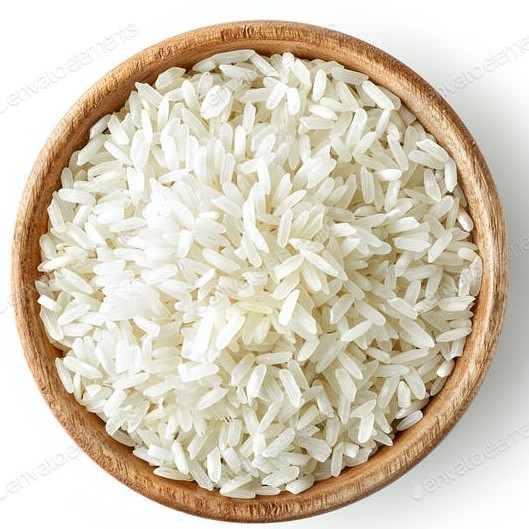
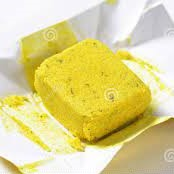
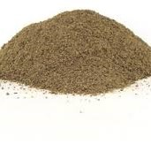

Arroz
Ingredientes:
-
tazas de arroz
 -
6 vasos con agua
-
200 gramos de granos de elote
-
Una ramita de epazote
-
1 cubo de caldo de pollo
 -
Aceite
-
Sal
-
Pimienta

Preparacion
- Freír el arroz en aceite hasta que tome un color doradito
- Quitar el exceso de aceite y agregar el agua, el epazote, el cubo de caldo de pollo, la sal y pimienta.
- Dejar a fuego lento hasta que el agua haya sido absorbida
- Agregar los granos de elote
- Esperar a que el arroz se vuelva suave y listo.
| Nombre | Aportacion | Unidad | Cantidad |
|---|---|---|---|
| elemento | elemento | elemento | elemento |
| Total | ajj | ||